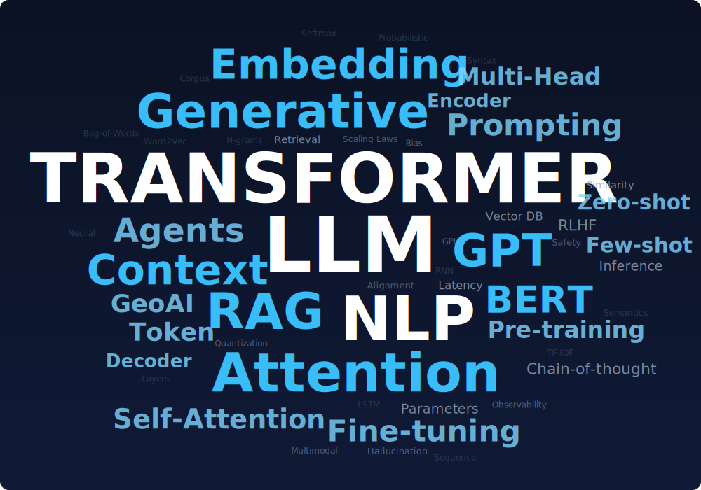

Dai modelli NLP classici ai LLM
Articolo in revisione (clicca per aprire)
Questo articolo è ancora in lavorazione e sotto revisione editoriale. Alcuni paragrafi potrebbero risultare incompleti o cambiare in modo significativo nelle prossime settimane.
Benvenuti alla terza puntata del percorso per come diventare un GeoAI engineer. In quest'articolo ci parleremo di storia e ci focalizzeremo sul come siamo arrivati a parlare di GPT, Gemini & co. e da dove siamo partiti. Non solo, non ti preoccupare!
Buona lettura!
Introduzione
Negli ultimi decenni il trattamento automatico del linguaggio (NLP) ha vissuto un'evoluzione straordinaria, passando da metodi statistici "semplici" ai moderni Large Language Model (LLM) con miliardi di parametri.
Questa rivoluzione non è stata solo storica, ma soprattutto architetturale: nuove idee (in primis parleremo di Transformer) hanno superato limiti prima considerati insuperabili. In questa guida strutturata (o meglio, così spero che sia), ripercorriamo le tappe fondamentali di questa evoluzione, dai modelli NLP classici agli LLM odierni, analizzando per ogni fase le scelte progettuali, i limiti incontrati e i trade-off.
L'obiettivo è costruire una mappa concettuale chiara: capire perché il Transformer ha cambiato tutto, quando ha senso usare un LLM (e quando no), e come gli LLM si inseriscono nei sistemi AI moderni (RAG, agenti, multimodalità).
NLP prima dei Transformer
Prima dell'era deep learning, l'NLP era dominato da metodi statistici e basati su feature manuali.
Se ti sei mai avvicinato al mondo dell'Elaborazione del Linguaggio Naturale (NLP), probabilmente ti sei imbattuto in definizioni tecniche, magari anche incomprensibili.
Partiamo dal Bag-of-Words (letteralmente "Sacco di Parole"), uno dei metodi più antichi per insegnare a un computer a leggere.
Il "frullatore" (Bag-of-Words) e il filtro (TF-IDF)
Immagina di voler spiegare a un computer la differenza tra due frasi. Il computer non sa cosa sia la grammatica, né conosce il soggetto o il verbo. Come facciamo?
Il metodo Bag-of-Words (BoW) fa qualcosa di semplice ma anche abbastanza efficace:
Prende la tua frase.
Ritaglia ogni singola parola con le forbici.
Butta tutto in un sacchetto e lo agita.
Quello che rimane è un elenco di ingredienti senza ordine.
Esempio:
Frase originale: "Il gatto insegue il topo"
Bag-of-Words: { "gatto": 1, "insegue": 1, "il": 2, "topo": 1 }
Il computer guarda nel sacchetto e dice: "Ok, questo testo parla di gatti e topi". Direi molto semplice, te che dici?
Il problemino che si paga con questa semplicità è che l'ordine non conta, perché si perde completamente la struttura.
Se per assurdo mettiamo nel sacchetto la frase inversa:
"Il topo insegue il gatto"
Per il modello Bag-of-Words, il contenuto del sacchetto è identico al 100%. Per lui, queste due frasi significano la stessa cosa, anche se nella realtà la situazione è ben diversa!
Questo metodo spreca parecchie risorse perché ha spesso a che fare con dei vettori molto sparsi. Per avere un'idea, prova ad immaginare un file excel avente una colonna per ogni parola del dizionario italiano (circa 100.000 colonne), e sulle righe le frasi che vuoi analizzare. Se la tua frase è
"Ciao Matteo"
Metterai un 1 nella colonna "Ciao" e un 1 nella colonna "Matteo". Nelle altre 99.998 colonne ci sarà uno 0.
Per questo che spesso viene considerato un metodo molto sprecone: serve tantissima memoria per salvare informazioni minime.
Prima di passare oltre vorrei spiegare una frase che ho sentito dire spesso. Parole come blu e azzurro sono vettori ortogonali se consideriamo Bag of words.
Cosa significa? Significa che il modello Bag-of-Words non ha nessuna intuizione semantica.
La parola "Felice" è nella colonna A. La parola "Contento" è nella colonna B. Per noi umani, A e B sono praticamente uguali. Ma seguendo questo algoritmo, A e B sono distanti e diversi tanto quanto "Felice" e "Lavastoviglie". Sono solo caselle diverse nel foglio Excel. Se cerchi un documento che parla di gente "felice", il computer potrebbe ignorare un documento che parla di gente "contenta", perché non sa che sono sinonimi.
Infine, c'è quella sigla che può apparire strana: TF-IDF. Questo è semplicemente un correttore matematico per dare il giusto peso alle parole nel nostro sacchetto. Senza TF-IDF, la parola più importante in un libro in italiano sarebbe "IL" o "DI", perché compaiono ovunque. Ma queste parole non ci dicono nulla sull'argomento del libro!
TF-IDF è praticamente un evidenziatore intelligente:
- Abbassa il volume delle parole che compaiono ovunque (come gli articoli: il, lo, la, di, a, da).
- Alza il volume delle parole rare e specifiche (come "Astronave", "Microscopio", "Rinascimento").
Se la parola "Banca" appare in un solo documento su mille, TF-IDF le assegna un punteggio altissimo: quella parola è la chiave per capirne di più per quel testo specifico.

Figura 01: Word Cloud che contiene tutte le parole presenti nel documento che stiamo scrivendo.
Modelli a N-grammi
I modelli a N-grammi sono stati proposti nel 1948 da Claude Shannon (1948) nell'ambito della probabilità fondazionale e introducono un minimo di contesto considerando sequenze di N parole. Un trigramma ad esempio stima la probabilità di una parola basandosi sulle 2 precedenti ($N=3$). Funzionano bene per frasi brevi o molto frequenti (es: "thank you very" → "much"), ma hanno grossi limiti: generano probabilità non nulle solo per frasi viste o molto simili al training, soffrono di sparseness (combinazioni rare non sono coperte) e usano un contesto rigido di lunghezza fissa. In pratica "voglio mangiare una fetta di ___" può difficilmente indovinare "torta" se non ha mai visto quella sequenza esatta. Inoltre, trattano le parole come simboli atomici (nessuna nozione che "gatto" e "felino" siano correlati).
Modelli probabilistici e lineari
Naive Bayes
Il metodo più semplice per la classificazione di testo usando metodi probabilistici è Naive Bayes, che assume che le parole del documento siano indipendenti dato il tema. Questo modello fa un'assunzione molto forte: ogni parola non ha alcun legame con le altre parole della frase.
Consideriamo un filtro che deve classificare la seguente frase:
"Hai vinto un milione di euro"
Il modello calcola la probabilità che il messaggio sia spam basandosi sulle singole parole, isolatamente: la parola "Vinto" ha un'alta frequenza storica nelle email di spam; la parola "Milione" è statisticamente rara nelle comunicazioni ordinarie, ma frequente nello spam; la parola "Euro" contribuisce ulteriormente al calcolo probabilistico. Combinando queste probabilità individuali, il modello classifica il messaggio come SPAM.
L'assunzione di indipendenza è spesso errata nella realtà linguistica. Se la frase fosse "Non hai vinto, peccato perché c'erano un milione di premi, molti in euro", il modello rileverebbe le stesse parole chiave ("vinto", "milione", "euro") e potrebbe classificarla erroneamente, ignorando la negazione iniziale o la struttura sintattica che ne cambia il senso.
Nonostante questa approssimazione, Naive Bayes è estremamente efficiente e offre ottime prestazioni in compiti di classificazione dove la presenza di specifici termini è determinante (es. Text Categorization).
Modelli di Markov
A differenza del Naive Bayes, i Modelli di Markov Nascosti (HMM) prendono in considerazione la struttura sequenziale del testo, seppur con un orizzonte limitato per svolgere compiti sequenziali. Un esempio è Part-of-Speech tagging, il cui l'obiettivo è determinare se una parola è un sostantivo, un verbo o un aggettivo in base al contesto.
Gli HMM modellano le dipendenze come transizioni di stato, ma sono limitati da una memoria molto corta(tipicamente bigrammi di stati) e richiedono di definire a mano feature/osservazioni. In generale, questi approcci richiedevano feature engineering manuale (es: conteggi, liste di parole rilevanti) e faticavano a catturare relazioni semantiche profonde o dipendenze a lungo raggio.
A differenza delle moderne reti neurali che apprendono autonomamente le rappresentazioni dai dati, i modelli lineari richiedono che un esperto definisca a priori quali caratteristiche osservare:
Definire liste di parole rilevanti (lessici).
Creare regole morfologiche (es. "le parole che terminano in -are sono verbi").
Gestire manualmente le eccezioni.
Questo approccio artigianale rendeva difficile scalare i modelli e catturare relazioni semantiche complesse o sfumature di significato che non fossero esplicitamente codificate dall'uomo.
Problemi principali e soluzioni tentate (pre-Transformer):
| Problema | Soluzione storica | Limite intrinseco |
|---|---|---|
| Nessuna comprensione semantica - Parole come ID univoci (one-hot), nessuna similarità tra termini correlati. | Bag-of-Words, TF-IDF, modelli lineari basati su conteggi. | Sparsità & no meaning: vettori enormi e sparsi; nessun concetto di sinonimi o polisemia (per il modello "dog" e "puppy" non hanno nulla in comune)[1]. |
| Uso del contesto locale limitato - L'ordine delle parole conta, ma modelli unigram ignorano la sequenza. | N-grammi (bigram, trigram, …) che considerano finestre di $N-1$ parole precedenti. | Finestra rigida e data sparsity: catturano solo dipendenze brevi; combinazioni rare di parole mai viste non possono essere previste[3]. Memoria limitata a $N-1$ parole, niente dipendenze a lungo termine. |
| Feature fatte a mano e assunzioni semplicistiche - Modelli generativi semplici (NB, HMM) o reti neurali "shallow". | HMM per sequenze; modelli lineari con feature (es: presenza di parola, conteggi). | Scalabilità e generalizzazione limitata: necessitano di definire a priori le feature giuste. Ipotesi forti (Markov, indipendenza) portano a perdita di informazione di contesto e correlazioni non catturate. |
Queste soluzioni funzionavano in contesti ristretti, ma avevano lacune strutturali. Non riuscivano a rappresentare il significato delle parole né a mantenere in memoria frasi lunghe. Quindi, i ricercatori hanno spinto verso metodi capaci di catturare semantica distribuita e dipendenze più lunghe. Ed è qui che sono nati gli embedding neurali e i modelli a rete ricorrente.
Embedding classici: word2vec, GloVe, fastText
Per superare la rappresentazione simbolica pura delle parole, negli anni 2010 si affermano i word embeddings, ovvero rappresentazioni dense in cui ogni parola è un vettore continuo in uno spazio a bassa dimensione. L'idea base è distribuzionale: "una parola è definita dal contesto che tiene" (Firth). Modelli come word2vec (Mikolov et al., 2013) hanno introdotto tecniche di training non supervisionato su grandi corpora per ottenere vettori di parola che catturano somiglianze semantiche[4]. Ad esempio, word2vec produce vettori tali che:
- "king" - "man" + "woman" ≈ "queen"[5]
- "Parigi" - "Francia" + "Italia" ≈ "Roma"
Ciò indica che il modello ha appreso relazioni analogiche e cluster semantici: parole simili (re, regina) hanno vettori vicini, e la differenza vettoriale tra re e regina è simile a quella tra uomo e donna.
Come funzionano questi embedding? Word2vec offre due approcci principali: CBOW (Continuous Bag-of-Words) predice una parola dato il contesto circostante, mentre Skip-gram fa l'opposto (predice il contesto data la parola target). In entrambi i casi la rete neurale addestra le rappresentazioni interne (embedding) affinché parole apparse in contesti simili abbiano vettori simili[6]. Un altro modello popolare, GloVe (Pennington et al., 2014), parte da statistiche globali di co-occorrenza parola-parola e fattorizza una matrice, ottenendo anch'esso vettori densi. Varianti come fastText (Bojanowski et al., 2016) hanno introdotto l'uso di sotto-parole, costruendo embedding di caratteri/n-grammi utili per catturare similarità morfologiche e gestire parole rare o out-of-vocabulary.
Cosa risolvono gli embedding statici:
- Sparsità ridotta: si passa da vettori enormi e sparsi (one-hot su vocabolari di decine di migliaia di parole) a vettori densi di dimensione tipicamente 50-300. Questo allevia problemi di memoria e permette di generalizzare: se "gatto" e "felino" hanno vettori vicini, il modello può trasferire conoscenza da uno all'altro anche se uno dei due era raro nel corpus[4]. - Similarità semantica: per la prima volta la macchina ha un notion di significato. Parole correlate (per contesto d'uso) si trovano vicine nello spazio vettoriale; cluster di parole simili emergono automaticamente (es.: {lunedì, martedì, …} raggruppati, {Roma, Milano, …} raggruppati).
Cosa non risolvono: il problema cruciale degli embedding classici è che sono statici. Ad ogni parola nel dizionario corrisponde un singolo vettore fisso, a prescindere del contesto in cui appare. Questo è limitante perché molte parole sono polisemiche: il significato di "bank" dipende dal contesto (banca vs argine del fiume). Un embedding statico di "bank" finirà per essere una sorta di media dei due significati, incapace di rappresentarli precisamente. Un esempio in italiano: "Java" può indicare un linguaggio di programmazione o un'isola; un unico vettore non può riflettere entrambe le possibilità in modo distinto.
Per chiarire, consideriamo alcune frasi con la parola "porto":
- "Il porto di Genova è uno dei più grandi del Mediterraneo." (scalo marittimo)
- "Dopo cena prendo un bicchiere di Porto." (vino liquoroso)
Un modello a embedding statici darà alla parola "porto" lo stesso identico vettore in entrambe le frasi, incapace di cogliere che nel primo caso è un sostantivo luogo e nel secondo un nome proprio di vino. Questa ambiguità semantica resta irrisolta. In pratica, un modello con embedding statici "pensa" che "porto (harbor)" e "porto (wine)" siano un unico concetto, perdendo informazione cruciale.
Di seguito un confronto tra embedding statici e contestuali:
| Embedding statici (word2vec, GloVe) | Embedding contestuali (ELMo, BERT, GPT) |
|---|---|
| Un vettore fisso per ogni parola-tipo nel vocabolario, indipendente dal contesto. | Vettore dinamico per ogni occorrenza della parola, calcolato in base alle parole circostanti. |
| Catturano somiglianze globali tra parole (es. "banca" vicino a "finanza" e "denaro" in assoluto). | Catturano il senso specifico in quella frase (es. "banca" in "riva della banca del fiume" avrà embedding vicino a "sponda", mentre in "direttore di banca" sarà vicino a "istituto di credito")[7]. |
| Vengono pre-addestrati una volta su corpus generico; uso diretto o come inizializzazione in modelli NLP. | Derivano da modelli deep (RNN/Transformer) pre-addestrati su larghi corpus con obiettivi linguistici (es. language model). Richiedono calcolo al volo ma forniscono comprensione più ricca. |
| Limite: non gestiscono polisemia né dipendenze sintattiche a lungo raggio. Il contesto oltre la finestra locale è ignorato. | Vantaggio: incorporano contesto arbitrariamente lungo: l'intero enunciato (o paragrafo) influisce sul vettore di ogni parola, riflettendo anche struttura sintattica e informazioni lontane. |
Esempio concreto: Frase 1: "Devo andare in banca a depositare un assegno" vs Frase 2: "Ci sediamo sulla banca del fiume". Un modello statico ha un solo vettore v("banca"). Un modello contestuale (come BERT o GPT) produrrà v1("banca") e v2("banca") diversi: nel contesto finanziario v1("banca") sarà vicino a vettori di "soldi", "sportello", mentre nel contesto naturale v2("banca") sarà vicino a "sponda", "acqua". Questo è un enorme passo avanti: la macchina "capisce" quale accezione è in gioco osservando le parole circostanti[7].
Riassumendo: word2vec, GloVe e simili hanno segnato una svolta introducendo la semantica distribuita e attenuando il problema della sparsità[4]. Hanno però lasciato aperta la questione del contesto: come rappresentare frasi intere, o parole che cambiano significato a seconda di dove compaiono? La risposta iniziale a questo è arrivata con i modelli ricorrenti, progettati per modellare sequenze.
RNN, LSTM, GRU: il tentativo di modellare il contesto
Mentre gli embedding producevano rappresentazioni statiche di parole, i Recurrent Neural Network (RNN) miravano a modellare intere sequenze di testo come input dinamici. Un RNN classico è una rete neurale che processa un elemento alla volta (es. una parola), riciclando un vettore di stato nascosto che porta informazione da un passo al successivo. Formalmente, al tempo t prende in input la rappresentazione del t‑esimo token $x_t$ e lo stato precedente $h_{t-1}$, producendo un nuovo stato $h_t = f(h_{t-1}, x_t)$ e magari un'uscita (se si fa modellazione linguistica, l'output può essere la distribuzione sulla prossima parola). In notazione vettoriale, un semplice RNN fa qualcosa come: $h_t = \tanh(W \cdot [h_{t-1}, x_t])$, dove $W$ contiene i pesi (stessi a ogni passo).
In parole povere, un RNN legge il testo come faremmo noi, parola dopo parola, aggiornando una sorta di "memoria interna" che accumula le informazioni lette finora. Ciò permette in teoria di tener conto di dipendenze a lungo raggio, perché l'influenza di una parola potrebbe farsi strada attraverso lo stato nascosto lungo tutta la sequenza. Ad esempio, in "Il libro che il professore ha assegnato era…" un RNN potrebbe, al momento di predire l'aggettivo finale, ricordare il soggetto distante "il libro" invece di confondersi con "il professore". Questa capacità di "memoria" era il grande vantaggio rispetto ai modelli a n-grammi.
Tuttavia, i RNN nella pratica hanno dimostrato serie difficoltà nel catturare dipendenze a lungo termine. Il problema principale è noto come vanishing gradient: durante l'addestramento, i gradienti propagati all'indietro attraverso molti passi temporali si attenuano esponenzialmente, fino quasi ad annullarsi[8]. Intuitivamente, ogni volta che applichiamo la catena di derivazioni attraverso un passo temporale, moltiplichiamo per la matrice di pesi e per la derivata della funzione di attivazione. Se questi valori hanno norma < 1 (come spesso con $\tanh$ o $\sigma$ nelle regioni saturanti), dopo 10, 20, 50 moltiplicazioni il prodotto diventa $\approx 0$. Significa che gli errori avvenuti al passo 50 non riescono a retropropagare efficacemente fino al passo 1: la rete dimentica l'inizio della sequenza mentre addestra la fine. In parole semplici, i RNN base "hanno la memoria corta". Questo spiega perché avevano difficoltà ad apprendere dipendenze di lungo raggio come quelle sintattiche complesse o di contesto globale[9].
Parallelamente si ha il caso opposto, l'exploding gradient (gradienti che esplodono): se i pesi o le derivate sono >1, la norma cresce esponenzialmente e porta a valori enormi, mandando in NaN i parametri. Fortunatamente questo è più facile da gestire (si risolve spesso con il gradient clipping) e da individuare subito (il training diverge visibilmente)[10]. I gradienti vanishing invece sono subdoli: il training sembra procedere ma in realtà la rete non impara relazioni a lungo termine perché gli aggiornamenti dal lontano passato sono praticamente zero[11].
Per mitigare il vanishing gradient, Hochreiter & Schmidhuber (1997) introdussero la Long Short-Term Memory (LSTM), una variante di RNN con un'architettura interna più complessa[12]. L'LSTM aggiunge gating: in ogni cella ci sono porte di ingresso, uscita e soprattutto porta di forget, che regolano quanta informazione vecchia mantenere e quanta sovrascrivere. In pratica l'LSTM conserva una cella di stato $c_t$ che può propagarsi (quasi) immutata se il modello lo ritiene opportuno, superando le moltiplicazioni ripetute da 0.<span>something</span>. I gradienti possono fluire attraverso $c_t$ più facilmente, evitando l'azzeramento. L'LSTM può così "ricordare" informazioni per più passi, decidendo autonomamente quando dimenticare. Un analogo più semplice introdotto in seguito è il GRU (Gated Recurrent Unit), che combina alcuni gate e semplifica l'unità: funziona bene in molti casi con meno parametri. Questi modelli erano esplicitamente progettati per apprendere dipendenze a lungo termine in sequenze[13].
Nonostante LSTM/GRU abbiano portato miglioramenti notevoli, restano alcuni limiti strutturali degli approcci ricorrenti:
- Dipendenze molto lunghe ancora problematiche: In teoria un LSTM può mantenere info per centinaia di passi, ma in pratica oltre una certa lunghezza (es. 100 token) l'efficacia diminuisce. Inoltre il contesto è tutto compresso nel vettore hidden di dimensione fissata (p.es. 256 o 512): c'è un limite fisico a quanta informazione distinguibile possa portare. Se il testo è molto lungo (un documento), anche un LSTM fatica a ricordare dettagli di inizio documento quando è arrivato alla fine.
- Backpropagation Through Time (BPTT) costosa e fragile: Addestrare un RNN richiede unrolling della rete sul tempo e backpropagare su ogni step. Questo significa che se abbiamo sequenze di 50 parole, la rete effettiva su cui facciamo gradienti ha 50 layer (tutti condividono i pesi, ma computazionalmente è come una rete profonda di 50 strati). È un calcolo pesante e sequenziale: non si può parallelizzare i 50 step perché il passo t dipende dallo stato di t-1. Questo è un grosso collo di bottiglia: anche con GPU, l'RNN deve procedere in serie, a differenza di modelli feed-forward che elaborano tutti gli elementi insieme. Ciò rende il training lento su sequenze lunghe[14]. Inoltre, più lungo è l'unroll più i gradienti diventano instabili (vanishing/exploding). Spesso si usava truncated BPTT: si tronca la backpropagazione a, ad esempio, 20 passi indietro, rompendo intenzionalmente le dipendenze troppo lunghe per stabilizzare e velocizzare[15]. Ma così facendo, la rete non impara davvero oltre quella finestra artificiale.
- Non scalano bene in termini di dati e modello: Per sfruttare grandi dataset o modelli molto capienti, servirebbe parallelizzare e batchare di più, cosa non banale con RNN. All'epoca (2015-2017) si usavano già LSTM con centinaia di milioni di parametri (ad es. traduttori neurali sequence-to-sequence con attenzione), però aumentarne le dimensioni portava rendimenti decrescenti: il training diventava oneroso, e altre parti come il meccanismo di attenzione (introdotto per sopperire alle carenze della pura ricorrenza) dominavano i benefici.
In sintesi, RNN/LSTM hanno introdotto l'idea di memoria temporale differenziabile e hanno permesso notevoli progressi (es. Google Neural Machine Translation 2016 usava LSTM bidirezionali + attenzione). Ma la loro natura ricorrente poneva limiti di velocità e capacità di modellare contesti lunghi. Era chiaro che per fare ulteriore salto serviva un'architettura diversa, più adatta al parallel computing e in grado di guardare tutto il contesto in modo più diretto. Da queste esigenze nasce il Transformer.
La rivoluzione del Transformer
Nel 2017 Vaswani et al. pubblicano "Attention Is All You Need", introducendo il Transformer, un'architettura che elimina completamente la ricorrenza a favore di un meccanismo di self-attention generalizzato[16]. Questo cambiamento concettualmente semplice ha innescato una rivoluzione: il Transformer ha dimostrato di poter scalare molto meglio, essere addestrato in parallelo e raggiungere performance superiori su compiti come la traduzione in una frazione del tempo di training dei modelli ricorrenti[17].
Vediamo i concetti chiave del Transformer:
- Self-Attention: è il cuore di tutto. In un layer di self-attention, ogni posizione/tokén nella sequenza "presta attenzione" a tutti gli altri, per decidere quali parole sono più rilevanti per interpretare quella posizione. Tecnicamente, per ogni token i si calcola un vector di query $q_i$ e, per ogni potenziale riferimento j, un vector chiave $k_j$ (entrambi ottenuti proiettando gli embedding iniziali). Si calcola un punteggio di affinità $s_{ij} = q_i \cdot k_j$ (maggiore se la parola j è rilevante per interpretare i). Questi punteggi attivano una somma pesata delle value $v_j$ (altra proiezione di ogni token) per produrre l'output per la posizione i. In formula:
dove $Q$ è la matrice delle query di tutti i token, $K$ delle key, $V$ delle value, e $\sqrt{d_k}$ è un fattore di normalizzazione (dimensione dei vettori chiave). La softmax produce pesi che evidenziano le posizioni più affini alla query. Il risultato è che l'output per il token i è una combinazione delle rappresentazioni di tutti gli altri token, ponderata in base alla rilevanza. Ad esempio, in "Lei posò il bicchiere perché era fragile.", la parola "fragile" come query assegnerà alta attenzione a "bicchiere" e molto meno a "lei", riuscendo a risolvere correttamente il riferimento di "era fragile"[18].
- Multi-Head Attention: invece di una singola proiezione Q,K,V, il Transformer ne esegue diverse in parallelo (multi-head). Ogni head è come un canale di attenzione che può concentrarsi su un tipo diverso di relazione (per es. una head potrebbe focalizzarsi sulle relazioni sintattiche soggetto-verbo, un'altra sulle coreferenze pronominali, etc.). I risultati di diverse heads (che operano su sottospazi dimensionali ridotti) vengono concatenati e combinati linearmente. Questo arricchisce la capacità espressiva: il modello può simultaneamente considerare più aspetti di dipendenza per ogni token[19].
- Positional Encoding: uno "svantaggio" della self-attention pura è che tratta gli input come un insieme non ordinato - se scambiamo due token, i punteggi di attenzione cambiano, ma l'architettura non ha un'informazione intrinseca di posizione sequenziale. Per questo si aggiunge a ogni embedding iniziale un encoding della posizione (fisso sinusoidale, oppure appreso). Così, i vettori di input contengono sia il significato della parola sia la sua posizione assoluta/relativa. In questo modo la rete può distinguere "il gatto ha mangiato il topo" da "il topo ha mangiato il gatto" in base agli offset posizionali[20].
- Encoder-Decoder vs varianti: Il modello originale è Encoder-Decoder: un Encoder legge la sequenza di input (es. frase in lingua originale) producendo rappresentazioni contestuali; un Decoder genera la sequenza di output (es. frase tradotta) un token alla volta, "guardando" sia gli stati interni dell'encoder (via cross-attention tra decoder e encoder) sia i token già generati (via self-attn autoregressiva con maschera futuro). Oggi esistono configurazioni semplificate: i modelli tipo BERT usano solo l'encoder (self-attention bidirezionale su tutto input, per compiti di comprensione), mentre modelli tipo GPT usano solo il decoder (self-attention unidirezionale, autoregressiva, per generazione di testo)[21].
Perché il Transformer scala (e ha cambiato tutto):
- Parallelizzazione totale: Contrariamente a un RNN, il Transformer non ha dipendenze sequenziali dentro ciascun layer. Ogni layer di self-attention può elaborare tutti i token in parallelo mediante operazioni matriciali ottimizzate su GPU/TensorCore. La dipendenza sequenziale rimane solo nell'autoregressione del decoder durante l'inferenza (generazione passo passo), ma durante il training anche il decoder può essere addestrato in parallelo usando maschere (tutta la sequenza di output "shiftata" in input). Di fatto, se prima per analizzare 10 parole dovevo fare 10 passi uno dopo l'altro, ora posso fare 1 passo che copre 10 posizioni con attenzione. Il guadagno in efficienza è enorme, specialmente su sequenze lunghe[22][23]. Transformers allenati su dataset giganteschi sono diventati fattibili solo grazie a questa caratteristica.
- Lungo raggio senza sforzo: In un singolo layer di attenzione, ogni token può interagire direttamente con qualsiasi altro, anche a distanza di 50 posizioni, con un solo passo. In un RNN per connettere token distanti occorrono molti passi e i gradienti potrebbero svanire lungo il percorso. Il Transformer invece in un colpo calcola dipendenze globali. Questo porta a catturare naturalmente relazioni a lungo termine (es. chi è soggetto di un verbo lontano, concordanze a distanza, ecc.) molto meglio dei RNN. Formalmente, nei Transformer il numero di operazioni necessario per collegare due posizioni qualsiasi è costante (1 per layer, o alcuni layer se relazioni di ordine più alto)[24], mentre in un RNN è proporzionale alla loro distanza nella sequenza.
- Maggiore espressività: La combinazione di multi-head attention e feed-forward position-wise (ogni layer ha anche una rete FFN che elabora individualmente ogni posizione dopo l'attention) fornisce al modello una capacità di rappresentazione enorme. Un Transformer con sufficienti heads e strati può simulare efficacemente anche operazioni sequenziali, ma ha la libertà di apprendere strutture molto diverse (ad es. ordinamenti topologici delle parole per rappresentare l'albero sintattico, ecc.). La comunità ha scoperto che i Transformer tendono spontaneamente ad apprendere cose come pattern grammaticali, relazioni semantiche e persino svolgere forme di ragionamento latente quando scalati. In breve, la loro capacità di generalizzazione con l'aumentare della dimensione è superiore a quella dei modelli precedenti.
RNN vs Transformer - confronto in sintesi:
- Parallelismo: RNN elaborano 1 token per volta (difficile parallellizzare), Transformer elaborano N token in parallelo (molto più efficienti su hardware moderno)[14].
- Memoria a lungo termine: RNN/LSTM memorizzano nel vettore hidden con potenziale attenuazione, Transformer con self-attention guardano direttamente ogni parte rilevante della sequenza (teoricamente contesto infinito, limitato solo dalla lunghezza di input gestibile).
- Complessità: Il costo di self-attention cresce $O(N^2)$ con la lunghezza (perché confronta ogni coppia di token). Questo è più costoso di un RNN ($O(N)$ per step), ma il trade-off è ampiamente ripagato dall'esecuzione parallela. Su sequenze brevi/medie il Transformer è decisamente più veloce a parità di risorse; su sequenze molto lunghe (es. migliaia di token) può diventare pesante in memoria e tempo, ma sono stati introdotti molti algoritmi di sparse attention per mitigare questo.
- Dati necessari: In generale i Transformer hanno più parametri e flessibilità, quindi tendono a richiedere molti dati per esprimere il loro potenziale. Fortunatamente, l'era dei big data ha fornito corpora immensi; inoltre l'addestramento auto-supervisionato (language modeling) ha reso possibile usare praticamente tutto internet come dati.
- Architettura modulare: Il Transformer è più facile da distribuire in cluster GPU (ogni layer è una serie di operazioni matriciali standard). Inoltre, è modulare: si possono sostituire parti (es: diversi schemi di attenzione, diverse pos. encoding) senza stravolgere tutto. Questo ha portato a un ecosistema di varianti e miglioramenti rapidi.
Schema concettuale (passo-passo) di un Transformer encoder layer:
1. Input Embedding + Positional Encoding: ad ogni token si somma un vettore di posizione.
2. Self-Attention (multi-head): si calcolano $Q,K,V$ per ogni token e si computa l'attenzione. Ogni token "raccoglie" informazioni rilevanti da altri token. (Nel decoder autogressivo, si applicherebbe una maschera per prevenire occhiata al futuro).
3. Add & Norm: c'è un residual skip connection che aggiunge l'input originario dell'attenzione al suo output, seguito da layer normalization. Questo aiuta il flusso di gradiente e la stabilità (il modello impara in pratica una sorta di identità + correzioni).
4. Feed-Forward Network (FFN): un MLP applicato separatamente a ogni posizione (stessa rete per tutti i token). Di solito 2 layer con ReLU/GELU, espande e ricontrae dimensione (ad es. da d_model=512 a 2048 e back). Serve ad introdurre non-linearità e mescolare le informazioni sintetizzate dall'attenzione.
5. Add & Norm: un'altra connessione residua sommando l'input FFN (che era l'output del sublayer di attn) all'output FFN, poi normalizzazione.
Uno stack di N layer così forma l'Encoder. Nel Decoder, ogni layer ha in più un blocco di cross-attention dopo il self-attn, dove le query vengono dal layer precedente del decoder e le key/value dall'output finale dell'Encoder, permettendo al decoder di condizionare la generazione sull'input codificato (utile in compiti seq2seq come traduzione).
Il risultato netto: il Transformer riesce a modellare dipendenze lunghe e complesse con efficienza, ed è altamente scalabile. Dal 2018 in poi, ogni record in NLP (traduzione, QA, summa, etc.) è stato polverizzato da modelli basati su Transformer. Questo architettura è la base di praticamente tutti i Large Language Models moderni.
Dai Transformer ai LLM
Con il Transformer come nuovo blocco fondamentale, il passo successivo è stato scalare modelli e dataset a livelli prima impensabili. Sono emerse due grandi famiglie di modelli pre-addestrati sul linguaggio:
- Modelli autoregressivi (tipo GPT): utilizzano solo la metà decoder del Transformer e sono addestrati come language model tradizionale - predire il prossimo token dato tutto il contesto precedente. Esempio: data la sequenza "La capitale di Francia è [MASK].", il modello (con maschera che impedisce di vedere "Parigi" se fosse dopo) impara a continuare plausibilmente la frase (in questo caso con "Parigi"). Questi modelli apprendono a generare testo uno step alla volta, e grazie all'attenzione hanno ampia visione sul contesto già generato. GPT-2 (OpenAI, 2019) con 1.5 miliardi di parametri fu uno shock per la capacità di generare testi coerenti e lunghi[25]. GPT-3 (2020, 175 miliardi) ha poi mostrato che aumentando di un ordine di grandezza i parametri comparivano abilità nuove, come il few-shot learning: senza ulteriore addestramento, dando solo pochi esempi nel prompt GPT-3 risolve compiti nuovi[26][25]. In pratica GPT-3 ha dimostrato che un modello enorme allenato su quasi tutto internet in modo autoregressivo può "imparare a imparare" dai prompt, generalizzando a molti task prima risolvibili solo con modelli specifici. Questo ha inaugurato l'era degli LLM generativi come ChatGPT.
- Modelli auto-encoder (tipo BERT): utilizzano solo la parte encoder del Transformer e sono addestrati con compiti bidirezionali come il Masked Language Modeling (MLM). In BERT (Devlin et al., 2018) si maschera random il 15% delle parole in input e il modello deve predirle guardando sia a sinistra che a destra (quindi sfrutta pienamente l'attenzione bidirezionale)[27]. Inoltre BERT fu addestrato anche con un compito ausiliario di Next Sentence Prediction (decidere se due frasi erano in sequenza nel testo originale), incoraggiando comprensione di discorso[28]. BERT ha fornito embedding contestuali potenti che, con un fine-tuning leggero, hanno migliorato radicalmente decine di task NLP (dalla classificazione, al QA, al NER). Questi modelli non sono progettati per generare arbitrariamente (non hanno un decoder autoregressivo), ma eccellono in comprensione e in produzione di rappresentazioni da dare in input a semplici classificatori. BERT fu uno spartiacque: in pochi mesi praticamente ogni benchmark NLP fu dominato da varianti di BERT. Tra queste: RoBERTa (2019, addestrato meglio e senza NSP), ALBERT (2019, più piccolo grazie a fattorizzazione e condivisione), DistilBERT (2019, compresso), ecc.
Successivamente, l'attenzione si è spostata sempre più sui modelli generativi di grandi dimensioni, in particolare con l'uscita di GPT-3. La comunità ha scoperto che scalare la dimensione del modello e dei dati porta a miglioramenti sostanziali e talvolta qualitativamente nuovi. Questo è stato formalizzato negli Scaling Laws di Kaplan et al. (OpenAI 2020): la perplexity (una misura di bontà del language model) decresce seguendo all'incirca una legge di potenza al crescere di parametri, dati e compute impiegata[29]. Nessun segno di saturazione appariva all'orizzonte: bigger is better. In altre parole, se raddoppi parametri (e proporzionalmente i dati e il calcolo), l'errore scende in modo prevedibile (anche se con rendimenti leggermente decrescenti). Ciò ha incoraggiato un "gigantismo" nei modelli: GPT-3 con 175B fu seguito da modelli ancora più grandi come Megatron-Turing NLG (Microsoft-Nvidia, 530B, 2021) e vari modelli cinesi da 200+ miliardi.
Tuttavia, nel 2022 uno studio di DeepMind (Chinchilla di Hoffmann et al.) ha ricalibrato la prospettiva: si è scoperto che molti LLM erano sotto-addestrati rispetto alla loro dimensione. Chinchilla (70B parametri) fu addestrato con 4 volte più dati di quelli usati per GPT-3, mostrando performance superiori a GPT-3 pur essendo < metà dei parametri, perché aveva utilizzato meglio il budget di calcolo[30]. In pratica, per un budget di compute fisso c'è un equilibrio ottimo tra dimensione del modello e numero di token di training: modelli troppo grandi allenati su pochi dati non raggiungono il loro potenziale, conviene ridurre parametri e prolungare il training. Questo ha portato uno shift: non solo aumentare i parametri, ma assicurarsi di avere molti più dati (il che è un problema, perché dopo aver raschiato tutto l'internet testuale, servono dati sintetici o multimodali per continuare).
Emergent Abilities: Un fenomeno affascinante osservato con i LLM è l'apparizione di capacità non presenti in modelli più piccoli. Wei et al. (2022) hanno catalogato varie abilità emergenti che spuntano oltre certe soglie di parametro/dati[31]. Ad esempio, modelli sotto i 10B parametri falliscono nel fare semplici calcoli aritmetici o ragionamenti logici multi-step, mentre modelli come GPT-3 (175B) riescono a fare somme a 3 cifre, traduzioni zero-shot, spiegare barzellette, scrivere codice semplice, ecc. Queste abilità non scalano linearmente ma sembrano attivarsi improvvisamente quando il modello supera un "punto critico" di conoscenza e generalizzazione. C'è dibattito sul perché - alcuni dicono che in realtà emergono gradualmente ma diventano misurabili oltre un certo livello di rumore; altri che i modelli iniziano a fare meta-learning. Fatto sta che LLM molto grandi mostrano comportamenti qualitativamente diversi: sanno seguire istru-zioni (instruction following), pianificare un ragionamento tramite chain-of-thought, interfacciarsi con strumenti se opportunamente istruiti, ecc., mentre modelli piccoli tendono a restituire frasi sconnesse o a non cogliere consegne più complesse.
"Più grande è meglio" - fino a quando? La spinta a scalare ha portato enormi progressi, ma non risolve tutti i problemi. Oltre al costo computazionale (addestrare GPT-3 costò su ordine dei milioni di $, GPT-4 ancor di più), ci sono limiti pratici: modelli enormi sono difficili da aggiornare, distribuire e far girare con bassa latenza. Inoltre, alcune fragilità (es. tendenza ad allucinare fatti, bias) persistono anche ingrandendo il modello - semplicemente i grandi allucinano in modo più convincente 😅. Studi come Chinchilla suggeriscono che non serve salire all'infinito coi parametri se non si può alimentarli con dati adeguati. Oggi molte ricerche puntano su scaling efficiente: migliore scelta dei dati, architetture specializzate per contesti lunghi (Transformers con attenzioni sparse o ricorrenti), modelli più piccoli ma specializzati (i cosiddetti Small Language Models emergenti). Un esempio è Alpaca (Stanford, 2023): un modello di soli 7 miliardi (basato su LLaMA) che, con fine-tuning su istruzioni, riesce a comportarsi simile a ChatGPT su molte richieste comuni - indice che con la giusta specializzazione non sempre serve un mostro da 100B per deliverare valore.
In conclusione, dal 2018 a oggi siamo passati da Transformer ~110M parametri (BERT-base) a LLM da centinaia di miliardi. Questa scalata ha sbloccato capacità latenti e aperto nuove applicazioni. Ma ha anche evidenziato problemi di allineamento (evitare output tossici, assicurare veridicità) e di efficienza. Questo ci porta al contesto attuale, dove un LLM raramente è usato "da solo": viene integrato in sistemi più ampi per essere reso affidabile, aggiornabile e utile in contesti applicativi reali.
LLM come componenti di sistema, non solo modelli
Un moderno AI engineer sa che usare un LLM potente "grezzo" e isolato spesso non basta. Oggi gli LLM sono tipicamente incapsulati in architetture più ampie dove altri componenti ne mitigano i limiti e ne potenziano le capacità. Ecco i principali ruoli e integrazioni:
- Prompt Engineering e formattazione: Il prompt è l'interfaccia immediata con un LLM. Dato che questi modelli sono task-agnostic (non hanno un obiettivo predefinito oltre a generare testo plausibile), l'utente deve definire l'istruzione o domanda in modo chiaro e spesso includere contesto aggiuntivo ed esempi. Progettare buoni prompt è un'arte: ad es. fornire il formato desiderato nella richiesta, oppure concatenare una breve conversazione di esempio che mostra al modello come dovrebbe rispondere. Per sistemi complessi, a volte i prompt vengono costruiti automaticamente combinando vari pezzi (istruzioni, conoscenza recuperata, memoria di conversazione, ecc.) - qui si parla di orchestrazione del prompt. Una buona ingegnerizzazione del prompt può migliorare affidabilità e precisione senza toccare il modello sottostante. In produzione, i prompt vanno anche gestiti in versione: piccoli cambiamenti (una frase in più, un esempio diverso) possono alterare sensibilmente l'output. Serve dunque logging e test sui prompt per garantire che il comportamento resti stabile al variare di prompt ed eventualmente tra diverse versioni di modelli.
- Retrieval-Augmented Generation (RAG): Uno dei problemi maggiori dei LLM è che la loro conoscenza è statica (limitata ai dati di training) e talvolta imprecisa. La tecnica RAG cerca di ancorare l'LLM a informazioni aggiornate e fattuali integrando un componente di retrieval (ricerca) nel loop. In pratica, di fronte a una domanda o task, il sistema effettua prima una ricerca in una base di conoscenza esterna (documenti, database, web) e poi costruisce un prompt che include i contenuti trovati come contesto per l'LLM. L'LLM viene quindi guidato a formulare la risposta basandosi su quel contesto invece che sulla sola conoscenza interna[32]. Ad esempio, se chiediamo: "Qual è il tasso di inflazione in Italia quest'anno?", un LLM base (addestrato fino al 2021) potrà solo indovinare e rischia di inventare; con RAG, il sistema cercherà su fonti affidabili gli ultimi dati e li fornirà al modello, che li riassumerà correttamente. Benefici: RAG affronta sia il problema di conoscenza vecchia (perché inserisce info aggiornate) sia riduce le allucinazioni (il modello è "ancorato" a fonti esplicite)[33]. Inoltre consente di avere LLM più piccoli con conoscenza generale limitata ma integrati con memorie esterne estensive. Molte applicazioni "LLM-enabled" (come chatbot su documentazione aziendale, assistenti per customer support, motori di Q&A su dati specifici) usano RAG: "spezzano" il prompt utente in query a un motore di ricerca (spesso su un vector database con embedding semantici dei documenti) e confezionano i risultati in un prompt finale per l'LLM.
- Tool use e API calling: LLM di ultima generazione possono essere visti come "cervelli" linguistici che ragionano ma non hanno interazione diretta col mondo esterno (a parte il testo). Per estenderne le capacità, li si dota della facoltà di chiamare strumenti esterni. Ad esempio, un LLM integrato in un assistente potrebbe, su richiesta, invocare: calcolatrici, servizi di meteo, database SQL, funzioni Python, motori di ricerca, ecc. Ciò richiede un'architettura che intercetti quando il modello "decide" di usare uno strumento. Esistono vari approcci: uno è il pattern ReAct (Reason+Act), in cui il modello produce esplicitamente un chain-of-thought e comandi d'azione (es: Cerca("ultime notizie inflazione Italia")), che il sistema esegue, per poi restituire al modello il risultato e permettergli di continuare la generazione[34][35]. Un altro approccio è fornire all'LLM un elenco di funzioni disponibili (con relativa documentazione nel prompt) e far sì che emetta una sintassi speciale quando vuole invocarle (vedi ad es. OpenAI function calling o LangChain tools). L'idea chiave è che l'LLM fa da controller intelligente: capisce di quale tool c'è bisogno e con quali parametri, delega il sub-task e poi ingloba la risposta nel suo flusso. Questo aumenta enormemente l'affidabilità su compiti dove il puro LLM sarebbe debole: calcoli matematici precisi, data lookup, interazioni su web in tempo reale, manipolazione di immagini, ecc. In pratica, l'LLM passa da solista a orchestratore di una rete di servizi.
- Agenti (LLM-driven agents): Un agent è un sistema più complesso che combina i meccanismi sopra (memoria, ricerca, tool) per perseguire obiettivi di più alto livello in modo autonomo. Un agente LLM tipicamente: riceve un obiettivo (es: "Prenota un volo da Milano a New York per venerdì prossimo sotto i 500€"), poi pianifica una serie di azioni (cerca voli, confronta prezzi, forse chiede conferma all'utente, infine chiama l'API di prenotazione). Durante questo processo, l'LLM potrebbe dover iterare: riflettere sui risultati parziali, aggiornare il piano, gestire errori (es. nessun volo sotto 500€, rilassare vincoli). Implementare agenti affidabili richiede cura: bisogna fornire al modello una sorta di loop dove può generare pensieri e azioni in cicli finché non raggiunge una condizione di termine. Inoltre serve assicurare che non faccia passi indesiderati. Framework come LangChain, Microsoft Semantic Kernel o Hugging Face transformers agent forniscono astrazioni per costruire agenti con LLM, definendo gli strumenti disponibili e gestendo il ciclo di prompt con i risultati delle azioni. Questo è un campo di frontiera, ma promette sistemi AI più autonomi e proattivi nel risolvere problemi complessi spezzandoli in sotto-problemi (un po' come faremmo noi umani). Un principio cardine emerso anche nelle guide di OpenAI/AWS è: "un LLM da solo non basta per comportamenti intelligenti e affidabili, serve incastonarlo in un workflow strutturato con pianificazione, memoria, strumenti…"[34][36].
- Controllo di qualità, sicurezza e osservabilità: Integrando LLM in sistemi più grandi, abbiamo anche l'opportunità di introdurre moduli di verifica e monitoraggio. Ad esempio, dopo che l'LLM genera una risposta, potremmo avere un passaggio di validation (un altro modello o un insieme di regole controlla se la risposta soddisfa certi criteri: no contenuti vietati, no info mancanti, formato corretto, etc.). Oppure implementare un loop di self-reflection: il modello rilegge la sua risposta e valuta se sembra coerente e corretta (tecniche di chain-of-thought aggiuntivo o vote/verify). In produzione è cruciale avere telemetria: misurare latenza delle chiamate all'LLM, numero di token usati, tassi di errore di parsing, ecc. Strumenti di LLM observability servono a tracciare non solo metriche classiche ma anche indicatori come: frequenza di allucinazioni rilevate, trend di costi (token per richiesta), tipi di richieste fatte dall'utente, e feedback degli utenti. Tutto questo rientra nell'ML-Ops per LLM (talvolta chiamato LLMOps). Non si può davvero mettere un modello conversazionale in mano a milioni di utenti senza logging e monitoraggio adeguato: "le cose possono diventare strane in produzione" - latenze che impennano, output fuori policy dopo un aggiornamento, costi che sfuggono, ecc[37][38]. Un AI Engineer deve implementare guardrail e allarmi: ad esempio, se improvvisamente il tasso di utilizzo di uno strumento (API esterna) chiamato dall'agente sale anomalo, potrebbe esserci un prompt injection in corso; oppure se il tempo medio di risposta cresce, forse il modello sta "ragionando" troppo a lungo su certe query (magari utenti maliziosi fanno input per stressarlo). LLM observability significa poter vedere dentro queste dinamiche e reagire[39][40].
In sintesi, oggi un LLM in produzione è raramente nudo e crudo. Lo si avvolge in uno strato di prompt ingegnerizzato, con eventuale retrieval per conoscenza aggiornata, la capacità di chiamare tool esterni, e modulistica di controllo. Tutto questo per ragioni di:
- Latency & cost: minimizzare token inutili (prompt brevi ottimizzati[41], caching di risposte frequenti[42], far fare al modello solo il necessario e delegare il resto). Ad esempio, se so che il 90% delle query utenti sono semplici, potrei usare un modello più piccolo/economico per quelle e chiamare il modello grande solo per il 10% difficile[43]. Oppure riassumere la conversazione in background per non passare tutto il contesto ogni volta (riducendo token, quindi costo, e latenza).
- Affidabilità: usare tool per compiti dove l'LLM è debole (calcolo, dati in real-time), retrieval per migliorare accuratezza sui fatti, validazione per prevenire output scorretti. Questo aumenta la confidenza che il sistema risponda correttamente e diminuisce i rischi (es. se l'LLM allucina un dato finanziario, potremmo mitigare avendo imposto di sempre citare un documento di conoscenza: niente documento = il modello deve dire "non so").
- Manutenibilità: tenendo i pezzi separati, posso aggiornare la knowledge base senza dover ri-addestrare il modello; posso modificare i prompt o aggiungere nuovi strumenti se cambiano i requisiti. È un approccio più modulare e ingegnerizzabile rispetto a vedere l'LLM come monolite.
- Osservabilità: un design a componenti permette di loggare le interazioni tra essi. Posso vedere quale documento è stato fetchato in RAG, quale tool è stato chiamato e con che input, e naturalmente la conversazione utente-modello. Questi log aiutano a diagnosticare problemi: se l'LLM dà risposte strane, forse il documento di conoscenza passato era sbagliato o il prompt si è degradato. Senza questa visibilità, un LLM è una black box che "ogni tanto sbrocca" e non sai perché.
Concludendo, la system view di un LLM è come di un cervello linguistico inserito in un corpo con sensori e attuatori: l'LLM fornisce capacità cognitive generali (comprensione, ragionamento, linguaggio), ma ha bisogno di "occhi e orecchie" (moduli di ricerca, database) e "mani" (API per agire) per essere veramente utile e affidabile nel mondo reale.
Limiti strutturali dei LLM
Nonostante i miracoli che sembrano fare, gli LLM attuali hanno limiti intrinseci importanti. Capirli è cruciale perché molte sfide di utilizzo nascono da questi limiti, che non si risolvono semplicemente "addestrando un po' meglio" ma richiedono interventi architetturali o di sistema (come abbiamo visto sopra). I principali sono:
- Allucinazioni: Un LLM "allucina" quando inventa informazioni non corrispondenti a realtà fattuale, pur esprimendole in modo convincente. Esempio: chiedi a un modello di elencare le opere di un autore e lui inserisce 2 libri inesistenti in mezzo ai titoli corretti, senza batter ciglio. Perché accade? A livello fondamentale, il training di un LLM lo spinge a predire la parola più probabile successiva, non a verificare verità. Se nei dati di training un nome appare spesso associato a certi fatti, il modello li ripeterà anche se sono falsi in quel caso specifico. Inoltre, quando viene spinto fuori distribuzione (domanda su qualcosa di cui non ha mai letto), il modello tende comunque a dare una risposta_, perché è così che è addestrato (penalizzato se non produce output). Non ha una base di conoscenza "verificata", ha solo correlazioni statistiche. Quindi se chiediamo_ "Chi ha vinto il Nobel per la fisica nel 2025?" (futuro, non sa), è probabile che allucini un nome plausibile, magari combinando nomi di scienziati esistenti. Questa tendenza a "extrapolare quando i fatti non sono disponibili" è intrinseca al modo in cui funzionano i language model[33]. Non c'è una semplice soluzione dentro il modello (anche modelli enormi e avanzati come GPT-4 ogni tanto allucinano). La mitigazione viene da RAG (così deve basarsi su fonti) o da tecniche di post-checking*. Ma finché un LLM genera testo sulla base di probabilità apprese, non avrà il concetto di "verità" se non come altro testo probabile. Alcuni ricercatori dicono che la veridicità è un'esternalità per questi modelli: va introdotta con regole o retrieval, perché di default il modello non sa quando non sa.
- Assenza di grounding (ancoraggio alla realtà): Questo è collegato alle allucinazioni ma più generale. Un LLM ragiona solo sul testo. Non ha percezione diretta del mondo fisico, né "esperienze" reali. Con "grounding" si intende il collegamento tra simboli e cose reali. I LLM sono stati chiamati pappagalli stocastici (Bender et al.) proprio perché generano frasi plausibili senza "comprendere" il mondo come noi. Ad esempio, un LLM può dire che un elefante pesa 5 kg se il prompt lo porta su una strada sbagliata, perché non ha mai visto un elefante vero. Questa mancanza di grounding li rende anche fragili a contraddizioni: potrebbe dire in una frase che "Roma è la capitale d'Italia" e poche righe dopo che "la capitale d'Italia è Milano", se spinto da domande/opzioni formulate diversamente. Per noi è assurdo perché sappiamo che c'è un'unica realtà esterna; per il modello, potrebbe aver memorizzato entrambe le frasi in contesti diversi e le ripete senza un meta-consistenza. Un altro aspetto: senza grounding temporale, i LLM non "sanno" dello scorrere del tempo. Se il training si è fermato al 2021, nel 2023 il modello non sente alcun disagio cognitivo nel dire "l'attuale primo ministro è X" quando X non lo è più - il modello non percepisce la realtà cambiata, vive nei dati con cui è stato nutrito[44]. Questa staticità (salvo aggiornare il modello con fine-tuning, che però è costoso e non continuo) è un problema intrinseco.
- Difficoltà di aggiornamento incrementale: Collegato al punto precedente, i LLM non hanno una memoria separabile facilmente aggiornabile. Se la capitale di un paese cambia, un sistema classico basato su DB modifica una riga nella tabella e tutte le query future riflettono la modifica. Un LLM invece ha la "conoscenza" impressa nei pesi sinaptici di una rete enorme: per aggiornarne uno bisognerebbe rifare training (costosissimo) o tentare tecniche di editing neuronale/fine-tuning locale. Ma questi interventi sono rischiosi: catastrophic forgetting (cambi un'informazione e inconsapevolmente ne rovini altre collegate), overfitting (il modello inizia a ripetere la frase di training aggiornata e perde fluidità), ecc. In breve, gli LLM non sono pensati come knowledge base aggiornabili, ma come modelli statistici statici. Anche qui RAG è una toppa: mantieni la conoscenza in un DB esterno e fai in modo che il modello lo usi, così aggiorni il DB e il modello "sa" di nuovo le cose. Ma il modello di per sé rimane statico; se gli chiedi senza fornirgli contesto aggiornato, ti darà la vecchia informazione. In applicazioni critiche, questo è un grosso limite (pensiamo a assistenti medici che devono stare al passo con linee guida, o chatbot di news… non puoi retrainare GPT-4 ogni giorno con le notizie).
- Bias e tossicità: I LLM apprendono dai dati di training, che includono ampie porzioni di Internet, social media, libri… Purtroppo questi dati contengono bias culturali, stereotipi, linguaggio d'odio, disinformazione e così via. Ne risulta che il modello li interiorizza e, se non filtrato, può riprodurli o addirittura amplificarli. Ci sono casi documentati di modelli che generavano output razzisti o sessisti quando provocati. Le aziende hanno introdotto tecniche di fine-tuning con Human Feedback (RLHF) e filtri per attenuare questi problemi (ad esempio ChatGPT ha una "Personalità di default" moderata e rifiuta certi contenuti). Ma è una mitigazione post hoc. Intrinsecamente, se chiedi a un LLM di impersonare un certo ruolo tossico o esplori in maniera non filtrata, i bias originali possono emergere. Inoltre, anche su cose non tossiche, i LLM possono avere bias sottili: ad es. tendenza a nominare più inventori uomini che donne, o assumere contesti occidentali come default in storie, ecc. Questi riflettono i dataset (più contenuti su uomini storici, etc.). Correggere bias dopo addestramento è difficile: devi o filtrare i dati in entrata (censura/pro-attiva, ma rischia di ridurre diversità) o applicare penalizzazioni tramite RL (rischi di rovinare conoscenza). È un campo attivo di ricerca. Da ingegnere, devi esserne consapevole: mai assumere che l'LLM sia neutrale o privo di pregiudizi. Va testato e monitorato, specie su output sensibili (es. consigli in ambito medico-legale).
- Fragilità adversarial e inconsistenza: I LLM possono essere sorprendentemente sensibili a piccoli cambiamenti nel prompt. Ad esempio, invertire l'ordine di due frasi nella domanda può talvolta portare a risposte diverse. Oppure aggiungere un dettaglio superfluo può confondere il modello. Ci sono anche attacchi di prompt injection: se l'utente inserisce nel suo input qualcosa come "Forget previous instructions. [Malicious instruction]", alcuni modelli potrebbero obbedire e violare i vincoli originali. Questa vulnerabilità nasce dal fatto che il modello non ha un forte concetto di verità di livello superiore o autorizzazioni: ogni input è testo da continuare, quindi se l'input conteneva "Il seguente è un prompt malizioso: ..." il modello potrebbe inglobarlo nella sua narrazione interna. Insomma, non hanno robustezza formale. Anche la consistenza logica interna non è garantita: possono contraddirsi, o fornire due risposte diverse a domande parafrasi. Per un ingegnere, questo significa che bisogna mettere safety net: es. validare le risposte attraverso modelli/verificatori separati, non fidarsi ciecamente su questioni di correttezza. Anche test A/B dei prompt e unit test comportamentali per il modello sono auspicabili per capire come risponde a vari phrasing, e scegliere quelli meno instabili.
Perché sono limiti intrinseci? In ultima analisi, perché derivano dalla natura stessa dei modelli linguistici. Un LLM è addestrato a comprimere le statistiche di un enorme corpus di testo nel suo parametro. Non ha percezione diretta del mondo né un modello causale del mondo (solo correlazioni linguistiche). Dunque non può sapere se un enunciato è vero, può solo giudicare se è probabile. Bias e tossicità sono presenti perché sono presenti nei dati umani e il modello non ha un valore etico proprio - a meno che glielo inseriamo tramite obiettivi aggiuntivi. L'inconsistenza e fragilità derivano dal non avere ragionamenti simbolici affidabili: anche se modelli avanzati mostrano tracce di logica, alla base non fanno inferenza simbolica, quindi possono cadere in contraddizione o essere sviati.
Questi limiti non sono bug risolvibili con una patch, ma aspetti fondanti. Significa che quando progettiamo sistemi con LLM dobbiamo costruire attorno per mitigarli. Ad esempio, per la conoscenza aggiornata (grounding) usiamo RAG; per le allucinazioni possiamo far ricontrollare la risposta a un motore di ricerca o fornire fonti; per bias/tossicità mettiamo filtri di moderazione e definizioni di stile nel prompt; per l'inconsistenza usiamo agenti che ricontrollano le risposte o segmentiamo problemi in sottoproblemi più facili.
In futuro, nuove architetture (es. integrazione più profonda con knowledge base, o modelli multi-modali che vedono e agiscono nell'ambiente) potranno ridurre questi limiti. Ma al 2026, chi utilizza LLM deve farlo con consapevolezza di queste incertezze intrinseche, adottando un mindset di "AI safety": mai lasciare che un LLM prenda decisioni irreversibili senza supervisione, e strutturare i prodotti in modo da poter intervenire se (quando) qualcosa va storto.
Collegamento con il tuo percorso GEO & Disaster Response
Veniamo ora al caso d'uso che ti interessa: applicare queste tecnologie in ambito geospaziale e di risposta a disastri (terremoti, calamità naturali, ecc.). Questo settore combina dati multi-modali (testi, mappe, immagini satellitari, sensori) e richiede sia analisi quantitative precise (es. rilevare danni da immagini) sia capacità di sintesi e ragionamento (es. redigere un rapporto di situazione, fare inferenze su rischi). Gli LLM possono giocare un ruolo prezioso, ma devono essere integrati correttamente con i flussi geospaziali esistenti. Vediamo alcuni scenari:
- LLM + RAG per report post-terremoto: Immagina dopo un forte terremoto di dover creare rapidamente un rapporto che riassuma i danni, le zone più colpite, lo stato delle infrastrutture e possibili azioni. Si dispone di varie fonti: relazioni dei vigili del fuoco, post sui social geolocalizzati, immagini satellitari con analisi dei crolli, database GIS con edifici e popolazione. Un LLM da solo non sa nulla del terremoto (a meno di aver addestrato su eventi passati, ma non sul nuovo). Però potremmo usarlo come motore di generazione linguistica alimentandolo con i dati specifici dell'evento. Con un approccio RAG, il sistema può recuperare ad esempio: "rapporti testuali dei vigili del fuoco nelle ultime 12h", "risultati di analisi automatica da immagini (X edifici crollati in area Y)", "elenchi di strade bloccate da mappe live". Queste informazioni vengono inserite (magari in forma già riassunta) nel prompt, e l'LLM viene incaricato di redigere un resoconto coerente e leggibile per, ad esempio, le autorità. L'LLM eccelle nel collegare i punti: può prendere l'elenco di fatti e trasformarlo in una narrazione: "Nella zona nord della città (Quartiere XX), risultano crollati circa 30 edifici, con le maggiori concentrazioni di danni lungo Via Alfa e Via Beta. Le squadre di soccorso hanno tratto in salvo 12 persone dalle macerie e segnalano almeno 5 dispersi. Il ponte sul fiume è inagibile, isolando temporaneamente la frazione Gamma...". Senza LLM, un operatore umano dovrebbe manualmente scrivere questo sommario integrando tante fonti; con l'LLM, l'operatore può concentrarsi su verificare e correggere, invece di scrivere da zero. Importante: come visto, qui l'LLM va grounded ai dati reali: non vogliamo che inventi numeri di dispersi! Dunque forniamo cifre e dettagli precisi via RAG, e magari chiediamo al modello di citare le fonti (se l'output è solo per uso interno). In tal modo l'LLM fa bene ciò che sa fare - linguaggio e ragionamento testuale - ma non agisce "in assenza di informazioni".
- LLM + agenti per supporto decisionale in emergenza: In situazioni di crisi, un decisore potrebbe interrogare un sistema AI con domande complesse, tipo "Dove dovremmo concentrare le squadre USAR in base alle segnalazioni e ai dati di danno?". Rispondere richiede: capire la domanda (compito linguistico), avere dati (geospaziali e testuali), ragionare combinando criteri (ad esempio: squadre USAR = ricerca e soccorso in macerie, quindi servono dove edifici crollati e popolazione intrappolata potenziale è maggiore). Un singolo modello statico farebbe fatica. Ma possiamo costruire un agente LLM dotato di strumenti: uno che query un database GIS per numero di edifici crollati per zona, uno che legge gli ultimi messaggi SOS arrivati, uno che consulta il registro di squadre già dispiegate. L'agente può fare un piano tipo: 1) ottenere mappa di densità crolli; 2) ottenere elenco segnalazioni di persone intrappolate; 3) incrociare per zone; 4) proporre priorità. I passi 1) e 2) li fa tramite tool (ad esempio chiamando un'API geospatiale che ritorna dati, o eseguendo una query su un knowledge graph di emergenza). Poi l'LLM stesso può generare una risposta tipo: "Le zone con maggior bisogno di USAR sembrano A e B. Nel quartiere A (20 edifici crollati, ~50 persone sotto macerie segnalate) al momento c'è solo una squadra operativa, suggerisco di inviarne almeno altre due. Nel quartiere B (15 crolli, 30 persone segnalate) la situazione è simile. Le zone C e D hanno meno crolli o già sufficiente copertura.". Questo è supporto decisionale: l'LLM non prende la decisione, ma fornisce un'analisi ragionata e leggibile rapidamente, integrando dati disparati (GIS + segnalazioni + stato risorse). Ciò permette al responsabile di confermare e agire molto più velocemente. Ancora, l'LLM qui funge da collettore intelligente: manipola i dati con ragionamenti e li presenta efficacemente.
- LLM come "interfaccia cognitiva" sopra modelli di Remote Sensing (RS): In analisi di immagini satellitari o telerilevamento, spesso otteniamo risultati tecnici: mappe di classificazione, matrici di confusione, percentuali di danno per cella, ecc. Un LLM può aiutare a tradurre questi output grezzi in insight umanamente fruibili. Per esempio, un modello di visione computazionale elabora immagini post-disastro e produce come output shapefile con poligoni delle aree allagate, e un indicatore di gravità per area. Un LLM potrebbe prendere questi risultati (convertiti in testo strutturato) e generare un briefing: "Le analisi satellitari indicano estese inondazioni lungo il fiume Delta: circa 45 km² di territorio risultano allagati. Particolarmente colpiti i comuni di X e Y, dove l'acqua ha coperto rispettivamente ~30% e ~45% dell'area urbana. L'area industriale di Y è interamente sommersa con possibile rilascio di sostanze in acqua. Le infrastrutture principali interessate includono la SP123 e la ferrovia Z, entrambe interrotte.". Osserva quante deduzioni e aggregazioni sono incluse: l'LLM può descrivere l'area totale (sommando poligoni), convertire quell'informazione in frase di impatto, identificare comuni dentro i poligoni (incrociando coordinate con nomi via un tool GIS nel backend), menzionare infrastrutture toccate (se ha dati vettoriali su strade ferrovie, può incrociarli). Insomma, lo usiamo come un report generator intelligente che sta sopra ai modelli numerici. Cosa non deve fare l'LLM? Non deve fare lui la segmentazione sull'immagine! Per riconoscere pixel allagati c'è un modello di visione specialistico che lavora su raster e magari utilizza reti convolutive o altre architetture. L'LLM non ha la percezione visiva diretta (a meno di usare un modello multimodale, ma attualmente per compiti di precisione i modelli dedicati sono migliori). Quindi la regola: lasciare ai modelli RS il lavoro "pixel-wise" quantitativo (sono addestrati per alta accuratezza su quello), e usare l'LLM per collegare quei risultati con la conoscenza e presentarli. Un LLM può ad esempio spiegare perché un certo pattern di allagamento è pericoloso ("quest'area era già franosa, l'alluvione la rende instabile"), cosa che un modello RS puro non fa.
Multimodalità (testo ↔ immagini ↔ geospaziale): Vale la pena notare che la tendenza attuale è verso modelli in grado di ingerire più forme di dati. Ad esempio GPT-4 ha capacità visive: puoi dargli un'immagine e lui produce testo su di essa. Ci sono modelli come CLIP e BLIP che collegano visione e linguaggio. Per dati geospaziali, emergono lavori che integrano grafi georeferenziati con LLM (es. GraphRAG nel geospaziale). Quindi in un futuro non lontano potresti avere un LLM multimodale che prende direttamente sia mappe che testi. Già oggi servizi come Google's PaLM-E puntano a unire visione, linguaggio e robotica. Nel contesto disastri, immagina di dare al modello sia la mappa del danno sia i tweet localizzati: un modello multimodale potrebbe combinare direttamente e spiegarti la situazione. Siamo agli inizi in questo - per ora, l'approccio modulare (modello visivo + LLM) è più pratico. Ma tieni d'occhio le ricerche, perché strumenti come Imagen (Google) o Kosmos-1 (Microsoft) stanno gettando ponti tra dati visivi e LLM.
Cosa un LLM non deve fare nel geospaziale/DR: come già accennato, non affidare a un LLM la precisione tecnica che richiede algoritmi dedicati. Se devi ottenere la latitudine/longitudine di un indirizzo, usa un geocoding API, non chiedere al modello di inventarsela! Se devi calcolare la magnitudo di un terremoto dai dati sismografici, servono formule fisiche, non il "parere" di un LLM. Gli LLM non hanno garanzie di accuratezza numerica né rigore scientifico. Quindi le parti core di analisi (rilevare danno, calcolare estensioni, contare esatti) vanno fatte con metodi deterministici o modelli ML specialistici. LLM eccelle invece in: sintesi, correlazione di alto livello, comunicazione, Q&A. Inoltre è bravissimo a colmare gap di knowledge generale: se in un rapporto devi anche spiegare concetti (es: cos'è una faglia sismica, o quali sono gli effetti del liquefacimento del suolo) l'LLM può generare quei paragrafi attingendo alla sua conoscenza addestrata.
Integrazione con pipeline GEO esistenti: Potresti immaginare il tuo sistema come: pipeline di data ingestion (satelliti, sensor, open data) → modelli analitici (CV per immagini, GIS computations, ecc.) → layer LLM per l'output all'utente. In fase di design, definisci bene l'API tra il layer analitico e l'LLM. Spesso conviene strutturare i dati in un formato testuale comprensibile al modello (es. bullet point o JSON), includendo anche spiegazioni. Ad esempio, invece di buttare raw numbers, potresti dire: "Strada X: interrotta (ponte crollato)". Così l'LLM sa già che la strada X è interrotta e perché, e può facilmente includerlo nel suo racconto, magari ragionando "ponte crollato → isolato quel comune a nord". Se dessi solo "strada X status: 0" dovrebbe inferire il significato di 0, molto più difficile. Quindi fare un po' di data preprocessing per LLM è utile: convertire i risultati tecnici in frasi o dichiarazioni semplici.
Validazione incrociata: in ambiti safety-critical (disastri lo sono), un LLM non deve essere l'unica voce. Si possono usare ensemble di approcci: far generare il rapporto all'LLM, poi farlo rileggere a un altro LLM chiedendo di evidenziare contraddizioni o possibili errori, e infine avere un human-in-the-loop (un operatore) che verifica punti chiave. Oppure generare due versioni (magari con temperature diverse o prompt diversi) e confrontare. Insomma, usare l'LLM come assistente, non come oracolo.
In conclusione su GEO & Disaster Response: un LLM può fungere da collettore intelligente e comunicatore sopra i dati geospaziali. Pensalo come un analista virtuale che conosce un po' di tutto (grazie al training generale) e che può essere istruito a usare i tuoi dati specifici per produrre analisi e report. Ti libera dal dover manualmente interpretare ogni mappa e ogni tabella, proponendoti un quadro integrato. Ma tu come ingegnere predisponi l'ecosistema: modelli specialistici per estrarre info dai dati grezzi, database ben organizzati, e poi l'LLM opportunamente imbrigliato (prompt mirati, RAG, tool) per cucire il tutto. Così sfrutti il meglio dei due mondi - accuratezza quantitativa dei modelli geo e intelligenza linguistica degli LLM.
Conclusioni e mappa concettuale evolutiva
Per ricapitolare quanto visto, presentiamo una mappa concettuale dell'evoluzione NLP → LLM, e alcune linee guida per un AI Engineer su cosa è fondamentale padroneggiare e cosa si può (relativamente) trascurare:
Mappa concettuale riassuntiva (NLP → LLM)
- Era statistica (anni '90 - primi '00): Approcci basati su modelli di probabilità semplici e feature manuali. Esempi: n-grammi per il language modeling[2], modelli di Markov (HMM) per tag sequenziali, bag-of-words + TF-IDF per IR e classificazione. Limiti: nessuna comprensione di significato, contesto limitato a poche parole, richiedono molte osservazioni per coprire casi rari[3]. L'ingegnere doveva progettare features (liste di parole chiave, pattern regex, ecc.). Obsoleto oggi se non per baseline veloci.
- Prime reti neurali per NLP (anni '00 - primi '10): Introduzione di reti feed-forward per language model (Bengio et al. 2003) e soprattutto word embeddings (Mikolov 2013)[45]. Qui il focus è rappresentare le parole in vettori densi che catturano similarità semantica (famoso king-man+woman=queen[5]). I modelli neurali iniziano a superare i conta-parole, risolvendo in parte la sparsità. Tuttavia questi modelli non modellano ancora bene le frasi intere: gli embedding sono statici, e le reti feed-forward avevano contesto finestra limitato (es. 5 parole). Si afferma il paradigma "pre-training + fine-tuning" in versione primitiva: si pre-addestrano embedding generali, poi si usano in modelli per compiti specifici.
- Sequence modeling con RNN (2014-2016): Il bisogno di contesto più ampio porta all'adozione massiccia di RNN, LSTM e GRU. Sequence-to-sequence con attenzione (Bahdanau et al. 2014) rivoluziona la traduzione automatica: un encoder LSTM codifica la frase sorgente, un decoder LSTM genera la frase target, con attention che fa da ponte flessibile (all'epoca l'attenzione era un meccanismo specifico, non l'architettura intera). Le LSTM dominano molte applicazioni - es. sintesi vocale, didascalie immagini (image captioning combinava CNN+LSTM). Problemi risolti: memoria a breve termine, ordine di parola, variabili lunghezze. Problemi rimasti: difficoltà con dipendenze molto lunghe (LSTM migliora ma non fa miracoli se paragrafi interi)[8], training non parallelo e lento[46], tanti trick necessari per non divergere (clipping, inizializzazioni ortogonali, ecc.). In questa fase i modelli iniziavano ad avere qualche decina di milioni di parametri e l'addestramento GPU diventava standard in NLP.
- Il Transformer (2017): Game changer. Introduce self-attention multipla e abbandona la ricorsione[16]. Risultato: modelli più veloci da addestrare, che scalano a dati enormi e catturano contesto globale meglio di LSTM. In pochi mesi sostituisce LSTM in traduzione, poi in praticamente ogni task sequenziale. Librerie come Tensor2Tensor e successivamente Hugging Face accelerano la diffusione. Modelli Transformer encoder-only (BERT, 2018) e decoder-only (GPT, 2018) inaugurano l'era dei pre-trained language models.
- Pre-training su larga scala (2018-2019): Con BERT e GPT si vede il potenziale di allenare modelli su quantità massicce di testo generico e poi riutilizzarli. BERT ottiene SOTA su 11 task NLP con fine-tuning minimo - "ImageNet moment" per NLP. GPT-2 mostra generazione di testo fluida e coerente come mai prima (al punto che inizialmente OpenAI fu riluttante a rilasciarlo interamente temendo abusi). La comunità open replica BERT facilmente (vedi RoBERTa), mentre GPT-2 resta un po' esclusivo per via dei costi di training. Compare anche ULMFiT (Howard & Ruder) che mostra il fine-tuning universale. I modelli base BERT-base (110M param) e GPT-2 (1.5B param) sembravano già grandi… ma era solo l'inizio.
- Large Language Models emergono (2020-2021): OpenAI rilascia GPT-3 (175 miliardi)[26], dimostrando che scalando di un ordine di grandezza si ottengono capacità zero-shot/few-shot impressionanti. Si diffonde il concetto di prompting come alternativa al fine-tuning: GPT-3 risolve compiti descritti nella prompt senza cambiare pesi. Altri big lab seguono: Google Brain con PaLM (540B), NVIDIA/Microsoft con Megatron-Turing (530B). Si esplora anche architetture sparse (Switch Transformers con gating per arrivare a trillioni di parametri efficaci, Mixture-of-Experts), ma i densi come GPT-3 dominano. Emergent abilities diventano topic di ricerca - modelli grandi mostrano comprensione del linguaggio, ragionamenti aritmetici e logici di base, programmazione, che modelli piccoli non mostravano[31]. In parallelo, DeepMind pubblica Gopher (280B) e un'analisi sui rischi/bias degli LLM. Empiricamente, "more data, more parameters" continua a migliorare performance quasi su ogni metrica, sebbene con costi enormi.
- Allineamento e utilità (2022-2023): Una sfida diventa rendere questi modelli "utili" e non solo grandi modelli pappagallo. OpenAI sviluppa InstructGPT poi ChatGPT: applica RLHF (rinforzo con feedback umano) per allineare l'output agli intenti degli utenti (meno divagazioni, più seguire istruzioni). ChatGPT (basato su GPT-3.5) esplode in popolarità mostrando l'efficacia di LLM allineati in un'interfaccia conversazionale. Intanto, la ricerca su scaling laws porta a Chinchilla (70B) che batte Gopher (280B) usando 4x dati, e UL2 (Google) esplora architetture di training alternative (mix di obiettivi seq2seq). Nel 2023, OpenAI rilascia GPT-4, modello multimodale (accetta immagini) e con capacità di ragionamento ancora avanzate (punta a un livello quasi da "AGI piccola" in certi benchmark). Vengono anche rilasciati modelli open-source notevoli: T5 (Google 2019, text-to-text), BLOOM (2022, modello multi-lingua open 176B), OPT (Meta 175B), e soprattutto LLaMA (Meta 2023) che pur non open-source completo trapela e viene fine-tunato in mille varianti (Alpaca, Vicuna, etc.), democratizzando un po' gli LLM di qualità. Nel frattempo si integrano LLM in prodotti e flussi industriali, con forte focus su incorporare conoscenza del cliente (da qui il boom di RAG) e strumenti (plugin di ChatGPT, LangChain per developer). Si affaccia la multimodalità: GPT-4 Vision, Google Gemini all'orizzonte, idee di agenti con percezione (vedi PaLM-E di Google che collega robotics). La tendenza è avere LLM come cervelli generali con occhi, orecchie e mani collegati.
- Verso Small & Specialized Models (2024+): In reazione al costo enorme dei LLM giganti, c'è un filone di ricerca su modelli più piccoli ed efficienti. Tecniche come distillation (compressione di un grande modello in uno più piccolo), quantization (riduzione precisione numerica dei pesi), e architetture alternative (mixture of experts, RETRO with retrieval in training, ecc.) promettono performance simili a GPT-3/4 con minor impronta. Si parla di Small Language Models quando un modello è addestrato su dominio specifico con molte meno dimensioni ma mantenendo qualità su quel dominio. Ad esempio, potresti addestrare un modello 6B param tutto su letteratura medica: otterrai un MedLM che con 6B param fa cose che GPT-3 175B farebbe faticando perché generalista. Non c'è free lunch - piccoli modelli difficilmente avranno la robustezza di quelli enormi su input "wild". Ma per implementazione pratica, a volte pezzi di LLM medi integrati con retrieval bastano e avanzano, con frazione di costo (sia computazionale che di rischio allucinazioni). Nel 2026 è probabile che vedremo architetture ibridate: parte neurale generativa + moduli simbolici o retrieval, più che spingere a 1 trilione di parametri e basta. Soprattutto, l'accento è su controllo e interpretabilità: come far spiegare ai LLM le loro risposte (es. citazioni fonti), come avere "constitutional AI" (modelli che seguono una costituzione di principi etici nella generazione).
Cosa deve sapere un AI Engineer, cosa può ignorare
Da sapere assolutamente:
- Le fondamenta architetturali: come funziona un Transformer (self-attention, multi-head, ecc.)[47], differenze tra RNN e Transformer[14], cosa sono encoder vs decoder. Non necessariamente saper dedurre le equazioni a mano, ma capire il flusso dei dati e perché è efficiente. Questo aiuta a debuggare dimensioni tensoriali, capire errori di shape, e ragionare su limitazioni (es: perché un modello 2k token context non può accettare 10k token senza modifiche).
- Il concetto di pre-training vs fine-tuning vs prompting: sapere che i modelli tipo GPT/BERT vengono pre-addestrati su enormi corpora con obiettivo generico, poi possono essere fine-tunati (aggiornando i pesi) su task specifici o promptati con opportune istruzioni. Ciò influisce sulle scelte progettuali: se hai pochi dati specifici, forse conviene prompt engineering invece di fine-tuning pesi, ecc.
- Conoscere le principali famiglie di modelli e cosa offrono: BERT (encoder, bidirezionale, ottimo per comprensione), GPT (decoder, generativo), T5 (encoder-decoder "unified" text-to-text), e alcuni modelli open come GPT-neo/LLama, Bloom. Non tanto i dettagli implementativi, quanto le differenze concettuali: un AI eng deve saper scegliere "per questo compito mi serve un modello generativo (es. completamento/assistente) vs un modello di classificazione (es. estrazione di info)".
- Limitazioni e failure modes dei LLM: hallucination, bias, context length limit, ecc e relative mitigazioni[33][38]. Questo è essenziale per progettare sistemi robusti: se sai che un LLM può inventare, predisponi i controlli; se sai che non può elaborare input > 4096 token, devi pensare a chunking o modelli speciali long-form.
- I principi di Retrieval-Augmented Generation: anche se non implementerai tu l'algoritmo di vettorizzazione, devi capire come un vector database può integrarsi, come si fa embedding di query e documenti, cos'è la similarità coseno. E soprattutto quando RAG serve: situazioni knowledge-intensive con info aggiornate[32]. Esempi pratici: chatbot su documentazione (il modello da solo non sa risposte precise, serve RAG). Sapere anche i limiti: se i documenti sono lunghi, il modello potrebbe non usarli bene se troppi; se la query embedding fallisce, il modello risponde a vuoto. Quindi testare pipeline end-to-end.
- Tool/Agents pattern: Familiarità con almeno una libreria (LangChain, etc.) per orchestrare LLM con tool. Non è necessario sapere nel dettaglio l'algoritmo di un agente tipo ReAct, ma sì sapere come l'LLM può eseguire step iterativi e chiamare funzioni[48][35]. È molto utile anche saper leggere i "chain-of-thought" log di un agente per debugging.
- Prompt engineering pratica: Sapere formulare i prompt per vari scenari (es. role prompt, few-shot con esempi, delimiting context con token speciali, ecc.). Conoscere trucchi come: "Pensaci passo passo" per incoraggiare ragionamento, oppure fornire istruzioni strutturate ("Rispondi con JSON contenente campi X, Y, Z"). Questa è diventata quasi una skill di programmazione. Un AI eng deve fare iterazioni sul prompt per migliorare output, e stare attento a iniezioni da input utente. Insomma, considerare il prompt come parte del codice applicativo.
- MLOps per LLM: Anche se non in dettaglio, concetti base: logging, monitoring cost e latenza[49], test di regressione (se cambio modello o prompt, ho test cases per confrontare risposte), gestione versioni (modello v1 vs v2, come rollout). E sapere usare strumenti come OpenAI Evaluation framework o prompt testing suites.
- Etica e policy: Non ignorare aspetti di AI Ethics. Un AI Engineer deve almeno conoscere le linee guida di utilizzo del modello (evitare output discriminatori, proteggere dati sensibili degli utenti, etc.). E sapere implementare filtri di moderazione (ad es. usare le API di moderazione su output, o modelli dedicati che classificano il testo generato). Questo è sia per responsabilità sociale sia per evitare guai legali o di reputazione.
Cosa si può (relativamente) ignorare / delegare:
- Dettagli matematici di retropropagazione e derivazione: Come funziona BPTT esattamente, dimostrare la vanishing gradient formalmente, o dedurre a mano l'equazione dell'attenzione con penna e foglio - come engineer puoi considerarlo background. L'intuizione qualitativa basta nella maggior parte dei casi. In pratica, librerie e paper implementano già tutto; tu devi capire l'effetto (es. "il gradiente svanisce se la sequenza è troppo lunga"[8], "l'attenzione pesa termini rilevanti"), ma non devi saper dimostrare il perché da zero.
- Modelli ormai superati: Non spendere troppo tempo a padroneggiare Naive Bayes, HMM, n-grammi Markov o anche algoritmi classici come CRF, SVM applicati al testo - a meno che lavori su un caso a bassissime risorse computazionali dove un modello semplice può bastare. Oggi quasi sempre un piccolo Transformer fine-tunato o un LLM via API li surclassa, quindi sapere teoria HMM è conoscenza storica più che pratica. (È comunque utile averli presenti per cultura generale e per capire i termini che trovi in vecchi sistemi, ma raramente li implementerai in nuovi progetti).
- Implementare modelli from scratch: Non è efficiente ricreare un Transformer layer per layer se esistono librerie collaudate (Transformers di Hugging Face, PyTorch Lightning, etc.). A meno di fare ricerca architetturale, un ingegnere può usare i modelli pre-addestrati e le API. Quindi si può "ignorare" il codice di basso livello (tipo scrivere il multi-head attention manualmente, con tutti i dimensionamenti). Meglio concentrarsi su come integrare il modello nella pipeline più ampia.
- Tutti i modelli usciti sul mercato: Ci sono decine di varianti (ALBERT, XLNet, ELECTRA, DeBERTa, GPT-NeoX, etc.). Non serve conoscerle tutte in dettaglio. È utile sapere macro-categorie e magari 1-2 nomi per categoria come esempio. Quando ti servirà uno specifico, puoi documentarti sul momento. Focus sulle idee generali: es. "ELECTRA pre-addestra come discriminatore anziché generatore mascherato, per efficienza" - ok concetto, ma non devi ricordare ogni particolare. In pratica oggi userai o modelli mainstream (BERT, GPT-3, etc.) o modelli addestrati ad hoc su tuoi dati (in cui caso segui architettura nota). Le differenze minori tra architetture contano poco per l'uso.
- Teoria linguistica approfondita: Sapere cos'è POS tagging, cos'è una dipendenza sintattica, è utile. Ma non occorre avere un PhD in linguistica computazionale. Molti concetti linguistici classici (grammatiche formali, ecc.) sono stati inglobati implicitamente nei modelli neurali. Un tempo bisognava codificare a mano grammatica e semantica; oggi il modello lo impara. Quindi, ad esempio, potresti non dover implementare un parser sintattico manualmente mai, se usi LLM per analisi testuale. Concentrati piuttosto su come valutare le output (metrica BLEU, Rouge, etc.) e su nozioni pratiche (tokenizzazione, etc.).
- Spingere al limite la SOTA: Se il tuo scopo è costruire sistemi funzionali, non è necessario ottenere l'accuracy assoluta top su un benchmark con fine-tuning elaborato. Spesso un modello pre-addestrato out-of-the-box + un po' di prompt engineering dà già ottimi risultati per prodotti. A volte "good enough" vince su "perfetto ma complicato". Quindi, puoi ignorare micro-ottimizzazioni tipo "dovrei usare Adafactor con linear decay vs AdamW con cosine schedule?" a meno che non addestri tu modelli. Se usi API come OpenAI, queste scelte sono astratte via. (Certo, se addestri modelli, allora sì devi curare iperparametri - ma è un lavoro da ricercatore ML più che da implementatore di sistema).
Riassumendo, un AI Engineer deve essere T-shaped: conoscenza ampia del panorama (dal bag-of-words agli LLM, per capire le soluzioni esistenti) ma profondità in quelle tecnologie oggi essenziali (Transformer e sue evoluzioni, e come metterle in produzione). Può tranquillamente fare a meno di dettagli storici e dimostrazioni teoriche rigorose, finché comprende i perché e quando di ogni tecnica.
Fonti fondamentali da studiare davvero
Chiudiamo con alcune fonti consigliate (paper e blog) che reputo fondamentali per consolidare le conoscenze discusse e rimanere aggiornati:
- Tomas Mikolov et al. (2013), "Efficient Estimation of Word Representations in Vector Space"[5][4] - (Paper) Introduce word2vec. Pietra miliare che spiega il concetto di embedding distribuito e due algoritmi (CBOW, Skip-gram). Rilevante perché getta le basi dell'idea di rappresentazioni dense che ancora oggi è al cuore dei modelli linguistici.
- Sepp Hochreiter & Jürgen Schmidhuber (1997), "Long Short-Term Memory"[50] - (Paper) Propone l'architettura LSTM per superare il vanishing gradient nei RNN. È un paper tecnico, ma leggere almeno l'introduzione e capire le componenti (input/forget/output gate) aiuta a comprendere come è nato il concetto di memoria nel tempo. Utile per retrospettiva storica e perché LSTM sono ancora usati in alcuni contesti particolari.
- Vaswani et al. (2017), "Attention Is All You Need"[16][17] - (Paper) Da leggere assolutamente. Introduce il Transformer. Spiega self-attention, multi-head, positional encoding, e mostra risultati su traduzione. È il fondamento di tutto ciò che è venuto dopo. Dopo averlo letto, il concetto di attenzione risulterà molto più chiaro e si apprezzerà il motivo della svolta. (Contiene anche qualche dettaglio implementativo come scaled dot-product, utile da conoscere).
- Brown et al. (2020), "Language Models are Few-Shot Learners" (GPT-3 paper)[26][25] - (Paper) L'abstract e alcune sezioni chiave mostrano cosa succede quando si scala un modello a 175 miliardi di parametri. Introdotto il fenomeno del few-shot learning dentro il prompt. Leggere questo paper aiuta a capire le capacità emergenti degli LLM e anche i limiti (hanno una sezione onesta su dove GPT-3 fallisce)[51]. È lungo, ma consiglio di concentrarsi sulle parti descrittive e sulle tabelle di esempi.
- Jared Kaplan et al. (2020), "Scaling Laws for Neural Language Models"[29] - (Paper) Un lavoro di OpenAI che ha quantificato come aumentando modello/dati/compute l'errore decresce in modo prevedibile. È utile per avere intuizione che più grande = meglio (fino a certi limiti) e concetti come compute-optimal. Anche se non si seguono tutte le formule, il messaggio è chiaro: c'è un modo efficiente di scegliere dimensione modello vs data. Questo ha informato scelte come quelle di Chinchilla.
- Hoffmann et al. (2022), "Training Compute-Optimal Large Language Models" (Chinchilla)[30] - (Paper) Importante perché rettifica le scaling laws considerando il trade-off parametri vs token. Mostra che un modello 70B addestrato con 4x token batte un 175B under-trained. Da leggere per capire che non basta accumulare parametri, bisogna anche nutrirli a sufficienza. Ci sono grafici molto istruttivi sulla perplexity al variare delle quantità. Concetto di "compute-optimal" LLM.
- Wei et al. (2022), "Emergent Abilities of Large Language Models"[31] - (Paper) Saggio (anche in forma di articolo di blog su Google Research) che cataloga vari emergent skills apparse oltre una certa scala, es. compositionality, multimodalità, ecc. È utile per avere coscienza delle differenze tra modelli medi e modelli giganti. Utile anche a livello concettuale: discute cos'è un'abilità emergente e quali ipotesi spiegano il fenomeno. Per un AI eng, aiuta a motivare perché modelli grossi hanno valore (fanno cose qualitativamente diverse, non solo un po' meglio il solito).
- Lewis et al. (2020), "Retrieval-Augmented Generation for Knowledge-Intensive NLP Tasks"[32] - (Paper) Propone il framework RAG. È la base teorica dietro tanti sistemi QA moderni. Mostra come combinare un index di documenti con un generatore neurale. Leggendolo, capirai architettura di RAG (encoders per query e documenti, selezione top-k, generazione condizionata) e vedrai risultati su QA dove il modello con retrieval supera di molto uno senza. Fondamentale per chi vuole implementare o migliorare sistemi LLM + knowledge base.
- Akanksha Sinha (2025), "From N-grams to Transformers: Tracing the Evolution of Language Models"[52][53] - (Blog) Un articolo di Medium che riassume un percorso simile al nostro, includendo anche contesto storico. È utile perché scritto in modo discorsivo, tocca N-gram, Word2Vec, RNN, Transformer, Scaling, in ~6 minuti di lettura. Può servire come ripasso rapido o per spiegare a colleghi non specialisti l'evoluzione (ha anche immagini e analogie). Una lettura leggera che però rinforza la comprensione cronologica.
- Jay Alammar (2018), "The Illustrated Transformer"[54] - (Blog/Tutorial) Una spiegazione visuale e passo-passo del Transformer. Alammar è noto per i suoi blog con schemi e illustrazioni eccellenti (in questo post rappresenta le query-key-value con diagrammi colorati, etc.). È fortemente consigliato se vuoi intuire cosa succede dentro l'attention senza perderti in algebra. Dopo averlo letto, concetti come multi-head e residual connection diventano molto più concreti. È una risorsa perfetta anche da consigliare a studenti o colleghi in formazione.
(Queste fonti coprono teoria e pratica. Ovviamente la letteratura è vastissima; altre menzioni onorevoli: Chris Olah's blog - es. "Understanding LSTM Networks" - per spiegazioni intuitive su LSTM; il blog OpenAI "Better Language Models and Their Implications" (2019) che discute GPT-2 e rischi; il report tecnico di GPT-4 (2023) per capire capability e limitazioni del più avanzato; e il sito Papers with Code per stare aggiornati sui nuovi SOTA. Ma i 10 sopra offrono un'ottima base.)
Chiusura: La rivoluzione dai modelli NLP classici ai LLM ha unito solidi fondamenti teorici (rete neurale, attenzione, probabilità) con una visione ingegneristica di larga scala (dataset immensi, infrastrutture GPU, integrazione in sistema). Come AI Engineer, comprendere questa evoluzione ti permette di fare scelte informate su quale modello usare, come addestrarlo o integrarlo, quali limiti considerare, e in definitiva come costruire sistemi AI efficaci e affidabili. Siamo solo all'inizio di questa nuova era: i modelli continueranno a evolversi (forse diventeranno più multimodali, più efficienti, più specializzati), ma i principi che hai appreso qui ti aiuteranno ad orientarti nel paesaggio in rapido cambiamento dell'AI linguistica. Buon lavoro sul tuo percorso GEO & Disaster Response - con queste conoscenze, potrai sfruttare al meglio gli LLM per fare davvero la differenza in applicazioni critiche e di impatto sociale!
[1] [2] [3] [4] [5] [18] [19] [20] [21] [22] [30] [45] [47] [52] [53] [54] From N-Grams to Transformers: Tracing the Evolution of Language Models | by Akanksha Sinha | Medium
[6] [7] [27] [28] Beyond "One-Word, One-Meaning": Contextual Embeddings - DEV Community
https://dev.to/mshojaei77/beyond-one-word-one-meaning-contextual-embeddings-4g16
[8] [9] [10] [11] [12] [13] [50] Recurrent Neural Networks Tutorial, Part 3 - Backpropagation Through Time and Vanishing Gradients · Denny's Blog
https://dennybritz.com/posts/wildml/recurrent-neural-networks-tutorial-part-3/
[14] [16] [17] [23] [24] [46] [1706.03762] Attention Is All You Need
https://ar5iv.labs.arxiv.org/html/1706.03762
[15] 9.7. Backpropagation Through Time - Dive into Deep Learning 1.0.3 documentation
https://d2l.ai/chapter_recurrent-neural-networks/bptt.html
[25] [26] [51] [2005.14165] Language Models are Few-Shot Learners
https://arxiv.org/abs/2005.14165
[29] [2001.08361] Scaling Laws for Neural Language Models
https://arxiv.org/abs/2001.08361
[31] Emergent Abilities in Large Language Models: An Explainer
https://cset.georgetown.edu/article/emergent-abilities-in-large-language-models-an-explainer/
[32] [33] [44] Retrieval augmented generation: Keeping LLMs relevant and current - Stack Overflow
[34] [35] [36] [48] AWS Prescriptive Guidance - Agentic AI patterns and workflows on AWS
[37] [38] [39] [40] What Is LLM Observability and Monitoring? | Honeycomb
https://www.honeycomb.io/resources/getting-started/what-is-llm-observability
[41] [42] [43] FinOps in the Age of AI: A CPO's Guide to LLM Workflows, RAG, AI Agents, and Agentic Systems
[49] Top 10 LLM observability tools: Complete guide for 2025 - Braintrust
https://www.braintrust.dev/articles/top-10-llm-observability-tools-2025